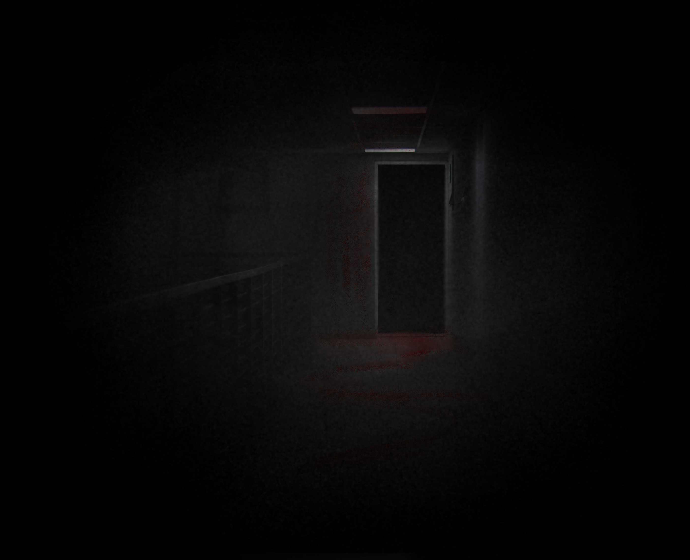

 BACKFor awhile, I couldn't see much of anything. I walked down the hall and up the creaky stairs and it felt like forever, but I'm also pretty out of shape, so it probably was just me.
LOOK CLOSER?Through my exhaustion, I didn't even notice that the atmosphere seemed to have gotten more . . . red.